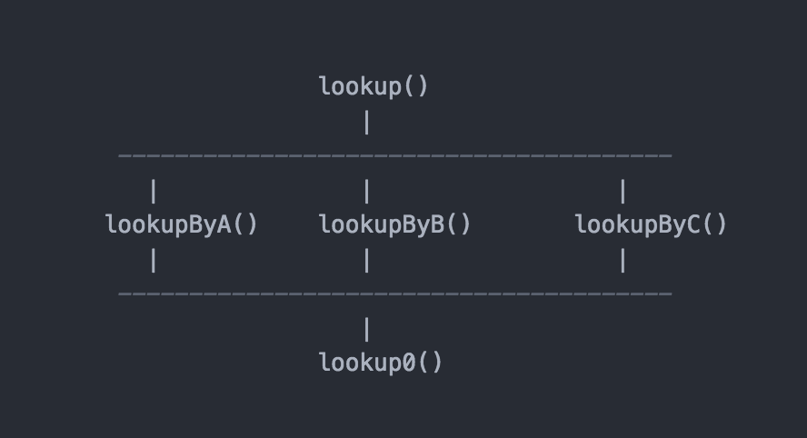

- 00 开篇词 程序行知：走在同样的路上，遇见自己的风景.md
- 01 初心：为什么成为一名程序员？.md
- 02 初惑：技术方向的选择.md
- 03 初程：带上一份技能地图.md
- 04 初感：别了校园，入了江湖.md
- 05 架构与实现：它们的连接与分界？.md
- 06 模式与框架：它们的关系与误区？.md
- 07 多维与视图：系统设计的思考维度与展现视图.md
- 08 代码与分类：工业级编程的代码分类与特征.md
- 09 粗放与精益：编程的两种思路与方式.md
- 10 炫技与克制：代码的两种味道与态度.md
- 11 三阶段进化：调试，编写与运行代码.md
- 12 Bug的空间属性：环境依赖与过敏反应.md
- 13 Bug的时间属性：周期特点与非规律性.md
- 14 Bug的反复出现：重蹈覆辙与吸取教训.md
- 15 根源：计划的愿景——仰望星空.md
- 16 方式：计划的方法——脚踏实地.md
- 17 检视：计划的可行——时间与承诺.md
- 18 评估：计划的收获——成本与收益.md
- 19 障碍：从计划到坚持，再到坚持不下去的时候.md
- 20 执行：从坚持到持续，再到形成自己的节奏.md
- 21 信息：过载与有效.md
- 22 领域：知识与体系.md
- 23 转化：能力与输出.md
- 24 并行：工作与学习.md
- 25 时间：塑造基石习惯（上）——感知与测量.md
- 26 时间：塑造基石习惯（下）——切割与构建.md
- 27 试试：一种“坏”习惯.md
- 28 提问：从技术到人生的习惯.md
- 29 偏好：个人习惯的局限与反思.md
- 30 写作：写字如编码.md
- 31 画图：一图胜千言.md
- 32 演讲：表达的技术.md
- 33 定义：阶梯与级别.md
- 34 晋升：评定与博弈.md
- 35 关系：学徒与导师.md
- 36 核心：安全与效率——工程技术的两个核心维度.md
- 37 过程：规模与协作——规模化的过程方法.md
- 38 思维：科学与系统——两类问题的两种思维解法.md
- 39 职业倦怠：如何面对？.md
- 40 局部最优：如何逃离？.md
- 41 沟通之痛：如何改变？.md
- 42 技术停滞：如何更新？.md
- 43 无法实现：困扰与反思.md
- 44 完成作品：理想与现实.md
- 45 代码评审：寄望与哀伤.md
- 46 人到中年：失业与恐惧.md
- 47 该不该去创业公司？.md
- 48 该不该接外包？.md
- 49 技术干货那么多，如何选？.md
- 50 技术分歧，如何决策？.md
- 51 技术债务，有意或无意的选择？.md
- 52 选择从众，还是唯一？.md
- 53 选择工作，还是生活？.md
- 54 侠客行：一技压身，天下行走.md
- 55 江湖路：刀剑相接，战场升级.md
- 56 御剑流：一击必杀，万剑归心.md
- 57 三维度：专业、展现与连接.md
- 58 三人行：前辈、平辈与后辈.md
- 59 三角色：程序员、技术主管与架构师.md
- 60 三视角：定位、自省与多维.md
- 61 工作之余，专业之外.md
- 62 跨越断层，突破边界.md
- 63 成长蓝图，进化跃迁.md
- 尾声 始于知，终于行.md
29 偏好：个人习惯的局限与反思
经过长时间的工作实践，我们会逐步养成一些做事的个人喜好或习惯，并且会自我感觉这种个人习惯会是很好的方法。
不可否认，每个人做事情都有些个人习惯，有些特别强烈的，可能其程度还会上升到 “癖” 这个字。明朝散文家张岱在其文《陶庵梦忆》中留有名句：“人无癖不可与交，以其无深情也。”这里的 “癖” 就是指一个人强烈的个人喜好与习惯。
作为程序员，过去这么些年干得最多的事情自然就是写程序，关于写程序也会形成一些个人习惯或者说癖好。自己的习惯或癖好对别人本该是无所谓的，但在团队合作中，有些时候，我们可能会不自觉地去维护，甚至推广这种习惯。这种 “不自觉” 的行为是值得我们警惕和反思的。
习惯形成
工作中的一些习惯是如何悄悄形成的呢？
记得毕业几年后，我也成了需要带新毕业学生的 “老” 程序员。其中，带学生的主要任务之一就是一起做项目，指导他们上手开始写真正的项目代码，而不再是实验性质的课程作业。
我开始工作的头几年，可以说是我写程序最多的几年，基本也就写出了我个人的一些习惯和喜好。比如，工程的目录结构、类的命名模式、接口的参数定义，甚至注释和签名的方式，都是我特别在意的地方。每当看到新同学们各自按自己的想象写得随心所欲，就感到非常地焦心。
那时候像 Java Maven 这种约定优于配置的工具还没有流行起来，大家都是按自己的喜好使用 Ant（一种 Java 构建工具）来定义工程项目结构，所以最终导致结构千差万别。
因而，我就忍不住去把新同学们的工程按我自己的定义喜好进行修改，以一种权威的说辞来强调自己的偏好：“我们要统一下，免得像以前旧项目一样差异太大，换个项目熟悉起来都要好半天，也不利于相互之间的代码交流。”
如今回想起来，当时这种 “约定优于配置” 的个人习惯在行业里还并没有成为共识，而我仅仅是出于自己对代码的 “洁癖” 或者说强迫症，就产生了这种强加于人的冲动行为。一些年后，Maven 崛起逐步取代了 Ant，这种约定优于配置的方式就变成了 Java 程序员的普遍共识，而我，也可以确认这个习惯基本算是一个好方法，也不再需要去强迫别人了。
以上，就是一个关于编程习惯的形成过程。从中我们可以看出，即使这样的习惯最后也许真的变成了大家认同的好方法，一开始也不该以个人的方式直接去强加于人。因为强加于人，总是容易带来分歧和争论，最终可能好习惯还没机会带来收益，却因为分歧争论直接带来了损失。
但编程中总结出来的一些方法和原则，很多可能就是始于个人习惯，最后逐渐传播并演化形成了普遍共识。
共识达成
如今，很多约定俗成的代码规范，基本就是从早期一些人的习惯中加以提炼总结出来的，然后形成了大家共同认可的好方法，并在组织层面形成了规范。形成了规范的东西，就不再是从个人习惯的角度去强加于人了，而是大家的共识达成。
写代码的一些方法能形成规范，但还有一些编程的好方法可能比较难用规范去描述，这些就慢慢形成了所谓的 “编程智慧”，并在程序员之间口口相传（如今的 “口口” 可能更广义一些，也包括了互联网上的文字交流和传播）。
一些 “编程智慧” 类的好方法，不太好形成具体的规范描述。下面，我就结合我自己的工作经历和经验，列举一些规范建议：
- 设计模式。遵守设计模式总是能让你少踩坑的，但如何灵活地采用合适的模式又是另一种智慧了。
- 术语约定。约定了术语，总是能让口头的概念和落在代码上的东西保持一致，减少沟通歧义，从而更高效。
- 单元测试。这比任何的代码评审都来得可靠，哪里该写多少测试用例，哪里可以不写，这又是智慧了。但不要刻意为了追求覆盖率而去写，覆盖率的技术统计方法其实是很唬人的，有些覆盖率很高的项目，该有的 Bug 还是有的。
- 随时重构。对于技术债务，每个月付点“利息”，比好几年后“连本带息”去还要感觉轻松得多。这条的特殊点在于，这可能是大部分程序员都认可的好方法，但却不是大部分人的习惯。因为技术上的债，实在自己还不起，总是可以推脱出去给下个“倒霉的家伙”，但从长远角度看，这样的推脱不会让你获得成长，甚至还会阻碍你的发展。
在程序界形成编程共识最经典的例子来自 Unix 的发展历史，而 Unix 几十年的发展历程，不仅仅是一个软件系统的进化，也是程序设计和编程方式的进化。从它的进化历程中，形成了独特的设计原则，而且已广为流传，达成共识。
共识，意味着看待问题共同的思考方式和角度，所有能形成共识的方法都是值得关注的。
分辨反思
编程中除了好方法，还有些确实只是个人习惯的东西，如果我们不去留心区分，很容易模糊了两者的界限。
举个例子，我曾经一直有个编程习惯是这样的。假如有一个查找接口方法叫 lookup()，而实现这个方法内部的逻辑要根据好几种条件来查找，按不同的参数条件来实现不同的内部逻辑分支，但最后执行时又会走同样的一段逻辑去存储里查找。这样描述起来比较绕，下面我用个简图来说明：

我个人编码中的方法命名习惯图例
如上，lookupByXXX 表达了不同参数逻辑的差异化处理，最后的 lookup0 则是一段共享的查找执行代码。 lookup 是一个公开的接口方法，而后面再加个 0 基本就是我的个人习惯了，表达了内部私有的一种技术性实现，它一定是私有的，不对外暴露的。
这个例子中的编程方法，是让我对所有类似需要的接口实现模式保持一致。但这确实只是我个人的习惯偏好，我没办法并且也不会要求别人也用类似的方式来命名函数和编写实现，因为别人也可能有自己的习惯偏好，谈不上谁比谁更好，毕竟它并不是广泛的共识。
那大家都认同并形成共识的方法就一定能形成习惯吗？也未必，这需要我们去分辨和反思。比如程序员都不爱写文档，很多人也没有这个习惯，但大家几乎都认同提供规范的设计和接口文档是个好方法，只是因为文档的优先级长期低于完成代码功能从而被搁置了。
另外，一些流行的概念就一定是好方法吗？比如，结对编程，是一种流行的概念。它的行为要求是：两位程序员坐在同一工作台前开发软件。它的优势作用是：与两位程序员各自独立工作相比，结对编程能编写出质量更高的代码。其理论基础是：两个程序员具有相同的缺点和盲点的可能性很小，所以通过结对编程的时候会获得一个更好的代码实现。
但在实际中，结对编程也有它的缺点和劣势，比如更高的开发成本（毕竟要同时占用两个人）。而且，有些人可能从心理上就很不喜欢结对编程的，比如我，因为坐在一起编程，难免分心而无法进入完美的心流状态，所以会感觉自己的工作效率都会下降一半以上；并且我也很难接受别人在看代码讨论时，用手戳屏幕指指点点。当然，不仅仅是我，还有更甚者，除了代码洁癖，还有生活洁癖，根本接受不了任何其他人和自己共用一个键盘的。
也许稍微松散点，没有那么物理上的严格结对，而是确保每一个程序员写的每一行代码，都能有一个配对的程序员去进行检视，虽说这个过程完全是异步或远程的，但效果应该也是可以保障的。这几乎就是开源项目的协作模式。开源项目的繁荣与成功，也证明了其实践的协作模式是一种好方法。
总结来说：
在你从程序新人成长起来的过程中，要学会区分，哪些确实是值得学习与推广的好方法，哪些仅仅是自己的个人习惯，特别是在你成长到开始成为技术管理者之后。
古语有云：“己所不欲，勿施于人。”而己之所欲，若是自己特有的习惯偏好，也就请勿妄施于人了。若确实觉得是个好方法，尽量建议于人，而非强加于人，即使你手上掌握有强加的权力。
反过来看，程序行业，编程实践中，存在大量流行的概念、模式、原则，甚至哲学，它们的产生都有其历史背景和过程，并在一定范围内形成了共识。但你依然需要去对这些流行的共识进行分辨和反思，看看哪些才是适合你的好方法。若真是好方法，也可以进一步将其培养成自己的习惯。
虽是以编程为例，但习惯的偏好不限于此。
最后，在你成长的路上，都形成了哪些好习惯呢？欢迎你留言给大家分享下。
© 2019 - 2023 Liangliang Lee. Powered by gin and hexo-theme-book.